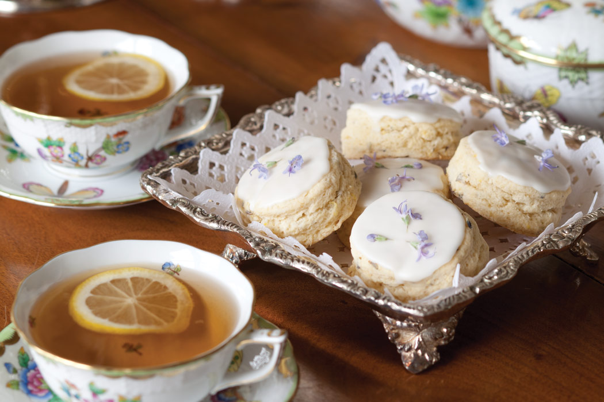

Lavender Scones

Description
Where delicate culinary flowers mingle with lemon zest, a crowning glaze of confectioners’ sugar offers a sweet counterpoint for a sprinkling of fresh flowers on our Lavender Scones.
This recipe makes 12 scones.
Ingredients
- 2 cups self-rising flour
- 1/4 cup sugar
- 1/4 cup cold salted butter
- 2 teaspoons dried culinary lavender
- 1 teaspoon fresh lemon zest
- 1/2 cup cold heavy whipping cream
- 1 large egg
- 1/2 teaspoon vanilla extract
- Confectioners' Sugar Glaze
- Garnish: fresh culinary lavender flowers
Steps
- Preheat oven to 350°. Line a rimmed baking sheet with parchment paper.
- In a medium bowl, combine flour and sugar, whisking well. Using a pastry blender, cut butter into flour mixture until mixture resembles coarse crumbs. Add dried lavender and lemon zest, stirring well.
- In a small bowl, combine cream, egg, and vanilla extract, whisking well. Add cream mixture to flour mixture, stirring to combine. Continue to bring dough together with hands. (If mixture seems dry, add more cream, 1 tablespoon at a time, until uniformly moist.)
- Turn out dough onto a lightly floured surface, and knead lightly 3 to 4 times. Roll dough to a ½-inch thickness. Using a 2¼-inch round cutter, cut 12 rounds from dough, rerolling scraps as necessary. Place scones on prepared baking sheet.
- Bake until edges are golden brown and a wooden pick inserted in centers comes out clean, about 15 minutes. Remove scones to a wire rack, and let cool completely.
- Spread Confectioners’ Sugar Glaze over scones. Garnish with lavender flowers, if desired.
Click here for more recipes!